Affect Characteristics Implied by the OU Process
Source:vignettes/characteristics.Rmd
characteristics.RmdModelling affect with the Ornstein-Uhlenbeck (OU) process implies
affect dynamics are characterized by several distinct features. This
vignette demonstrates each feature visually. For mathematical
definitions of the quantities shown here, see stability(),
stationary(),
and relaxation().
1. Mean Reversion
After perturbations, affect returns toward its baseline at a rate determined by (for stable, unidimensional systems). High indicates rapid regulation; low indicates emotional inertia.
Show code
model <- affectOU(theta = diag(c(5.0, 0.5)), initial_state = 3)
sim <- simulate(model, seed = 123, stop = 20)
plot(sim,
by_dim = FALSE,
main = "Mean Reversion Depends on θ",
sub = c("Fast Regulation (θ = 5.0)", "Slow Regulation (θ = 0.5)")
)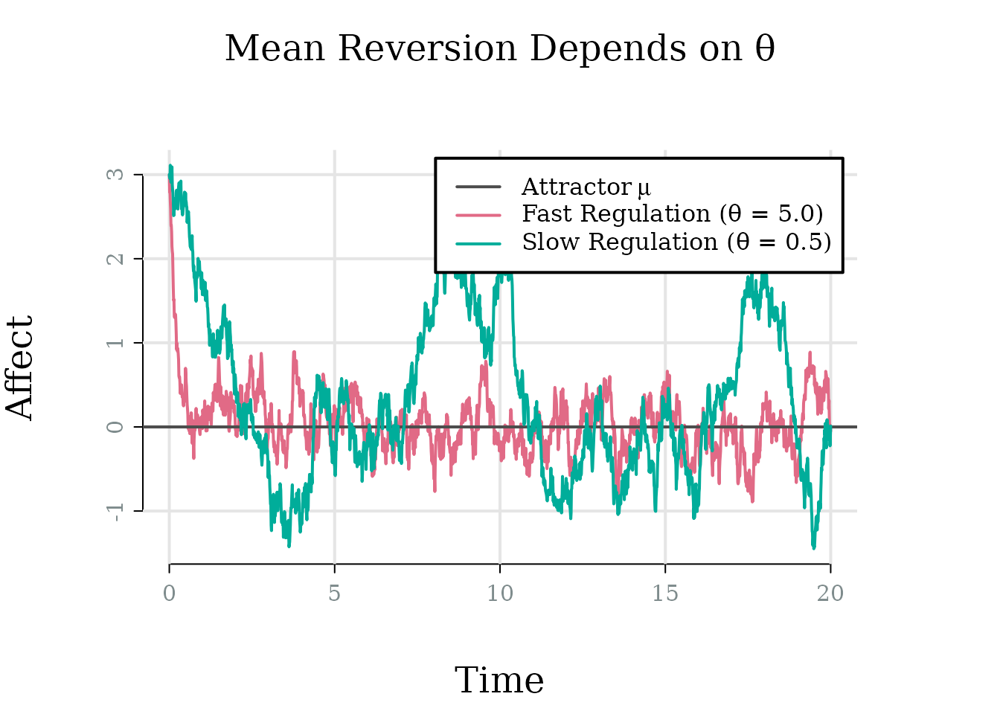
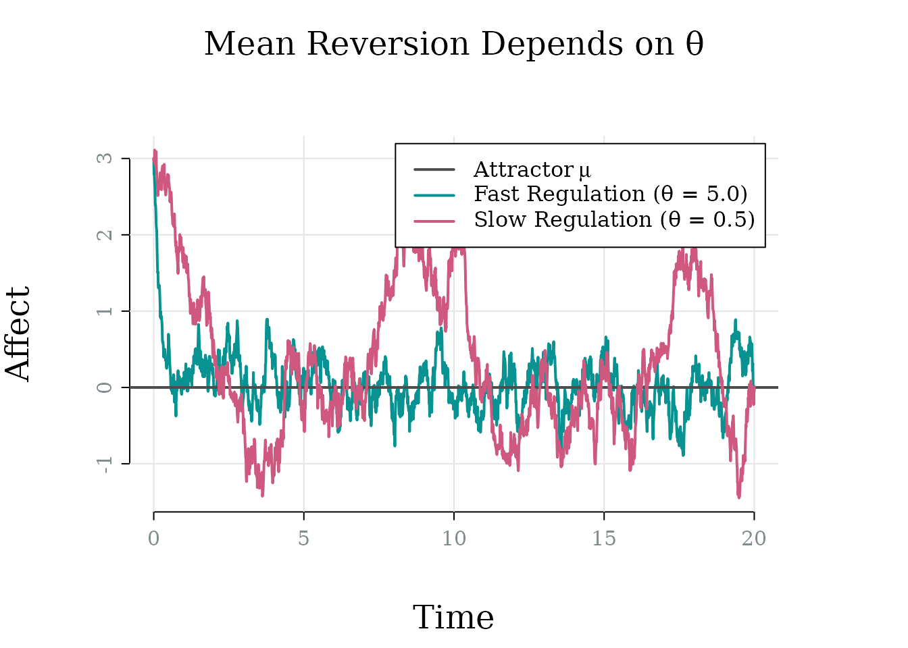
2. Perturbation Persistence
The relaxation time is the characteristic time scale of the OU process—the time for the expected deviation to shrink to . The half-life marks the 50% point. Effects decay exponentially: at two , about 13.5% remains; at three , about 5%.
model <- affectOU(theta = 0.5, mu = 0, gamma = 1)
relaxation(model)
#>
#> ── Relaxation time of 1D Ornstein-Uhlenbeck Model ──
#>
#> Half-life (t₁/₂): 1.386 time units
#> Relaxation time (τ): 2 time units
#>
#> Time for perturbation to decay to:
#> 50% 37% 14% 5% 1%
#> 1.386 2.000 4.000 6.000 10.000Show code
# Simulate with more time points for accurate ACF
sim <- simulate(model, stop = 10000, dt = 0.01, save_at = 0.01)
plot(sim, type = "acf", lag.max = 10)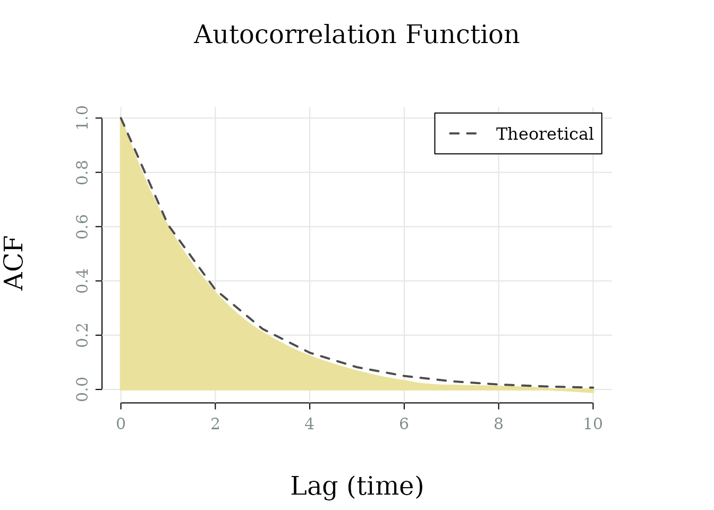
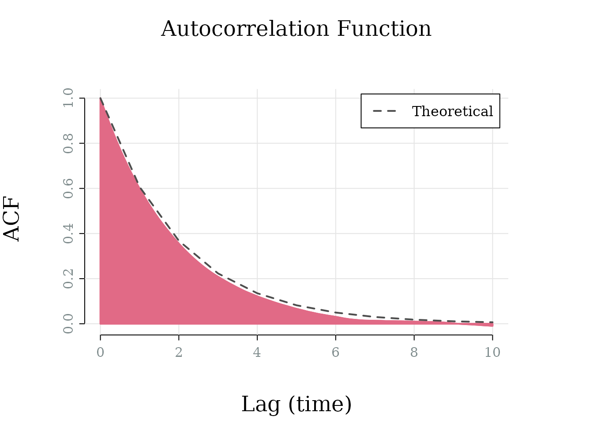
The ACF equals
at the relaxation time and
at the half-life. Slow regulation means longer persistence and higher
autocorrelation. See relaxation()
for more details on this concept and its interpretations.
3. Reactivity
The parameter controls the magnitude of random perturbations—emotional reactivity to environmental fluctuations.
Show code
model <- affectOU(theta = 0.5, mu = 0, gamma = diag(c(0.3, 1.5)))
sim <- simulate(model, seed = 456, stop = 20)
plot(sim,
by_dim = FALSE,
sub = c("Low Reactivity (γ = 0.3)", "High Reactivity (γ = 1.5)"),
main = "Effect of Reactivity on Fluctuation Magnitude", ylim = c(-4, 4)
)
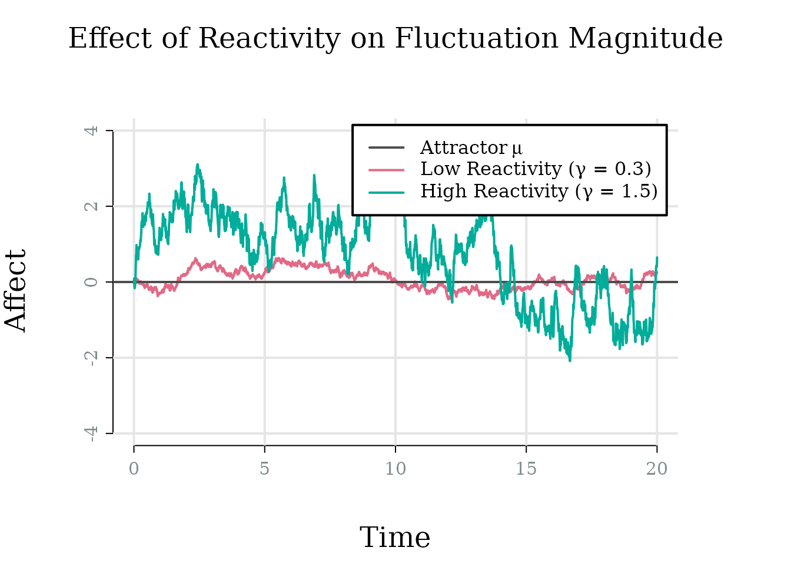
Higher produces larger fluctuations around the attractor.
4. Stability Regimes
Univariate
The sign of determines qualitative behaviour:
- : Stable. Mean-reverting around . Affect fluctuates within a bounded range.
- : Random walk. No attractor; variance grows over time. Affect drifts without returning.
- : Unstable. Exponential divergence from . Small perturbations amplify.
Show code
model <- affectOU(theta = diag(c(0.5, 0.01, -0.3)))
sim <- simulate(model, stop = 100, seed = 43)
plot(sim,
ylim = c(-10, 10), by_dim = FALSE,
main = "Affect Dynamics of Different Stability Regimes",
sub = c("θ > 0 (stable)", "θ ≈ 0 (random walk)", "θ < 0 (unstable)")
)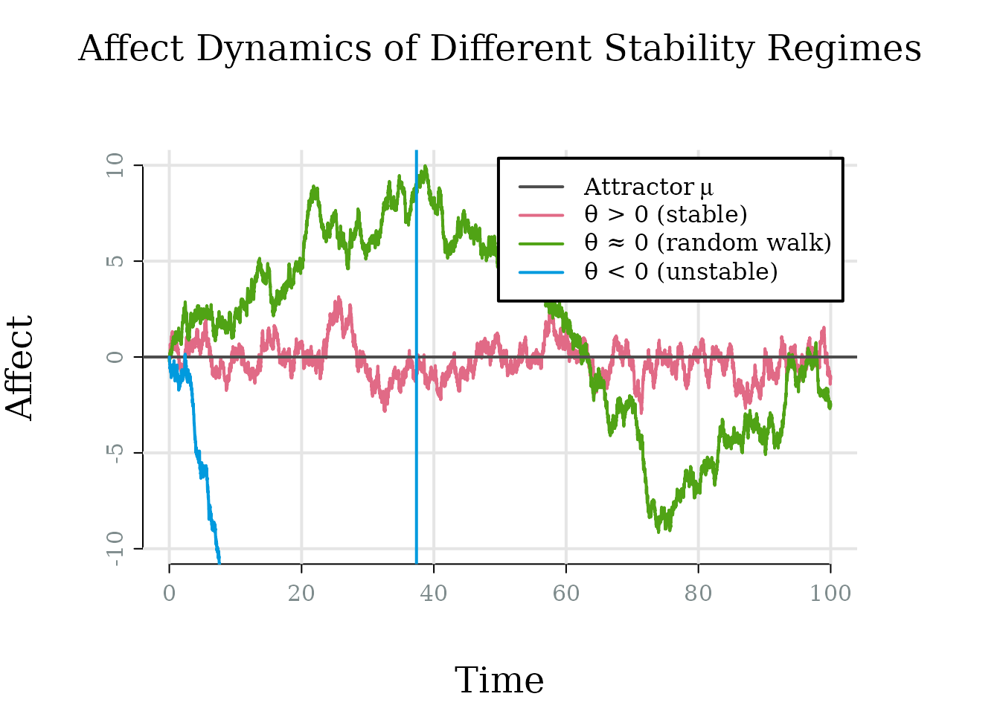

Multivariate
For multiple dimensions, stability depends on the eigenvalues of . Three cases arise:
- Real positive eigenvalues: Smooth exponential decay toward . All dimensions settle without oscillation.
- Complex eigenvalues with positive real parts: Damped oscillations. Dimensions rotate around in the phase space, spiralling inward. This can represent cyclical affect patterns.
- Any eigenvalue with zero or negative real part: The system is non-stationary. Affect diverges over time – either drifting monotonically or oscillating with growing amplitude, depending on whether the eigenvalues are real or complex.
Show code
# Real eigenvalues: smooth decay
theta_real <- matrix(c(0.5, 0.1, 0.1, 0.5), 2, byrow = TRUE)
eigen(theta_real)$values
#> [1] 0.6 0.4
# Complex eigenvalues: oscillatory decay
theta_complex <- matrix(c(0.5, -0.4, 0.4, 0.5), 2)
eigen(theta_complex)$values
#> [1] 0.5+0.4i 0.5-0.4i
seed <- 123
sim_real <- simulate(
affectOU(theta = theta_real, mu = 0, sigma = .1),
stop = 50, seed = seed
)
sim_complex <- simulate(
affectOU(theta = theta_complex, mu = 0, sigma = .1),
stop = 50, seed = seed
)
plot(sim_real, type = "phase", main = "Real eigenvalues")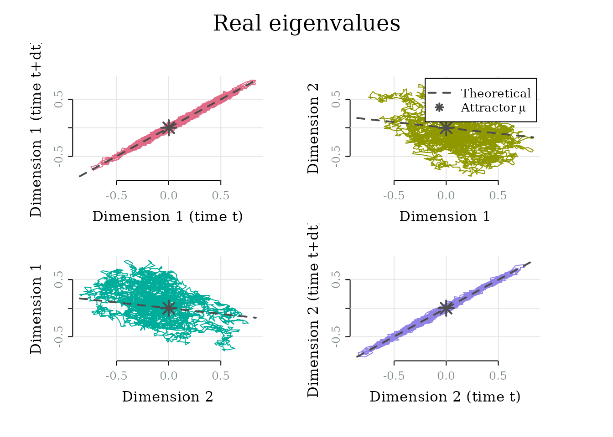
plot(sim_complex, type = "phase", main = "Complex eigenvalues")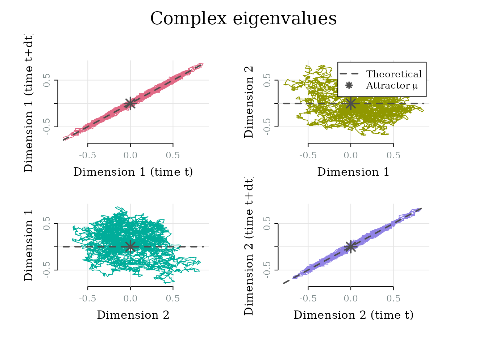
 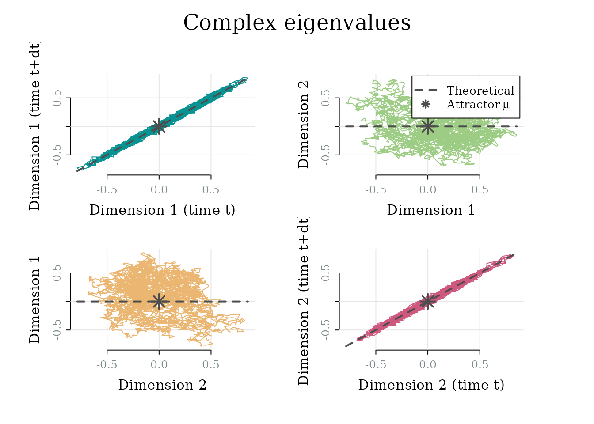
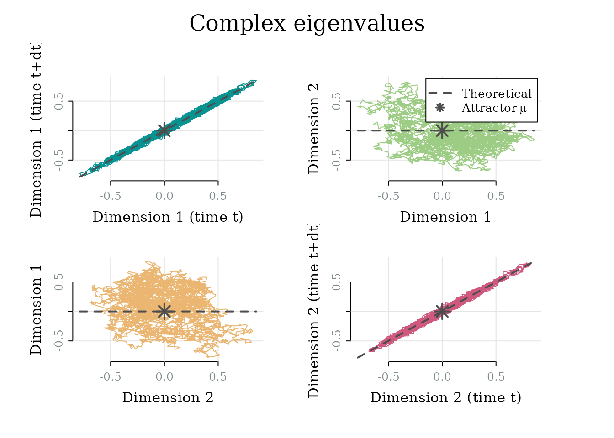
The oscillatory case shows rotation in the phase space, reflecting the imaginary component of the eigenvalues. For affect dynamics, this could represent alternating patterns between dimensions (e.g., valence and arousal cycling together).
5. Multivariate Coupling
In multivariate models, off-diagonal elements of capture cross-regulation between dimensions.
Show code
# Dimension 1's deviations from baseline push dimension 2 in the opposite direction
theta_2d <- matrix(c(
0.5, 0.0,
2, 0.5
), nrow = 2, byrow = TRUE)
model_2d <- affectOU(theta = theta_2d, mu = 0, gamma = 1)
sim_2d <- simulate(model_2d, seed = 102)
plot(sim_2d, by_dim = FALSE, main = "Coupled Trajectories", xlim = c(0, 20))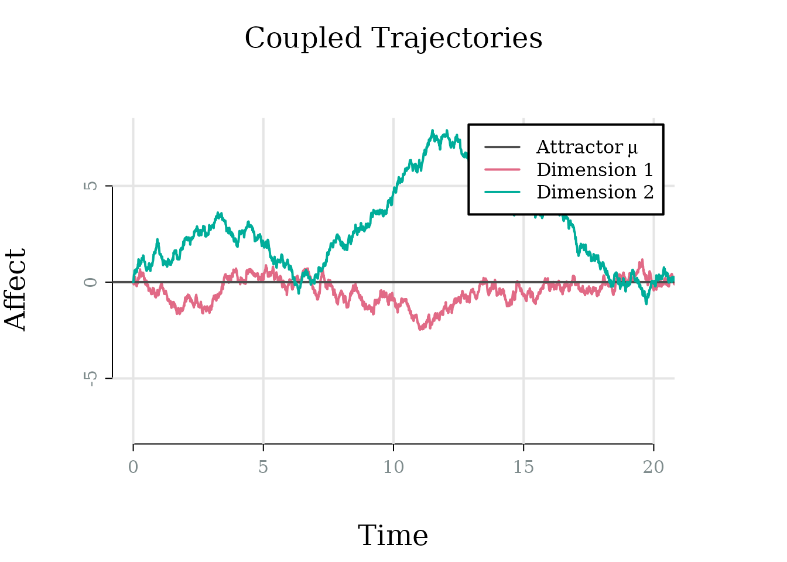
plot(sim_2d, type = "phase", main = "Phase Portrait")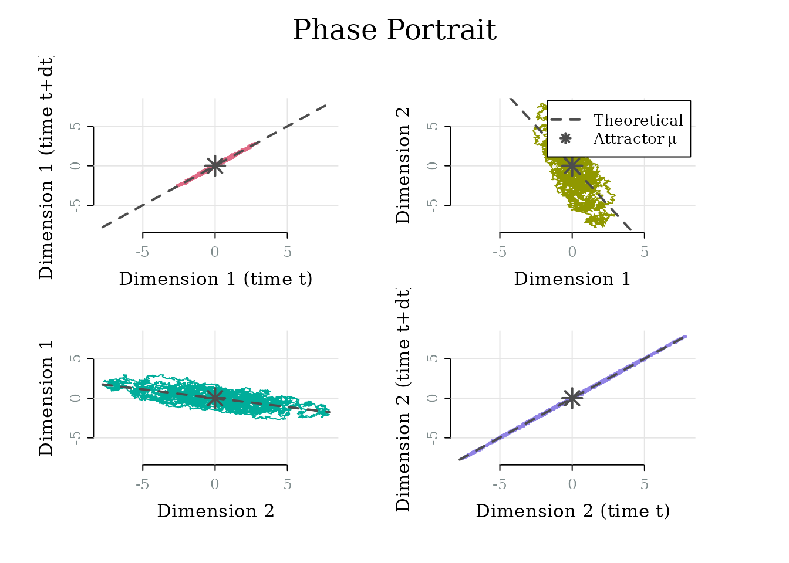

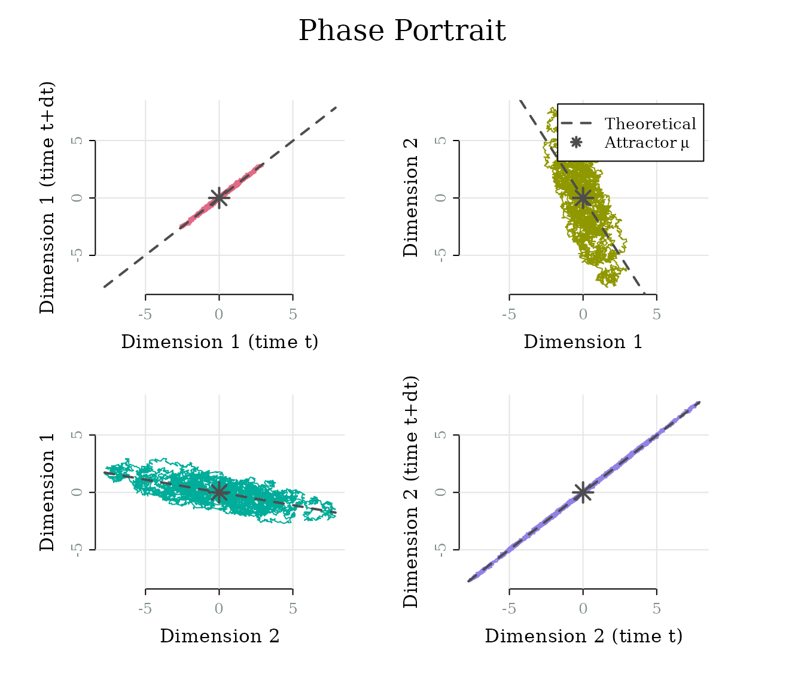
The positive entry means that when dimension 1 deviates from its attractor, it pushes dimension 2 in the opposite direction: if dimension 1 is above baseline, dimension 2 is pushed down, and vice versa. This creates interdependent dynamics visible in the phase portrait.
6. Noise Coupling
Off-diagonal elements of create correlated noise between dimensions. This can lead to synchronized fluctuations even in uncoupled systems.
Show code
# Correlated noise with no cross-regulation
gamma_2d <- matrix(c(
1, 0.5,
0.5, 1
), nrow = 2, byrow = TRUE)
model_2d <- affectOU(theta = 0.5, mu = 0, gamma = gamma_2d)
sim_2d <- simulate(model_2d, seed = 102)
plot(sim_2d, by_dim = FALSE, main = "Correlated Noise", xlim = c(0, 20))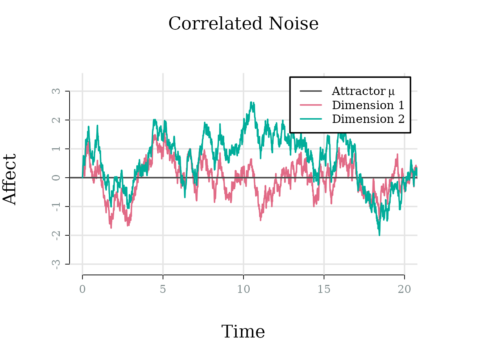
plot(sim_2d, type = "phase", main = "Phase Portrait")

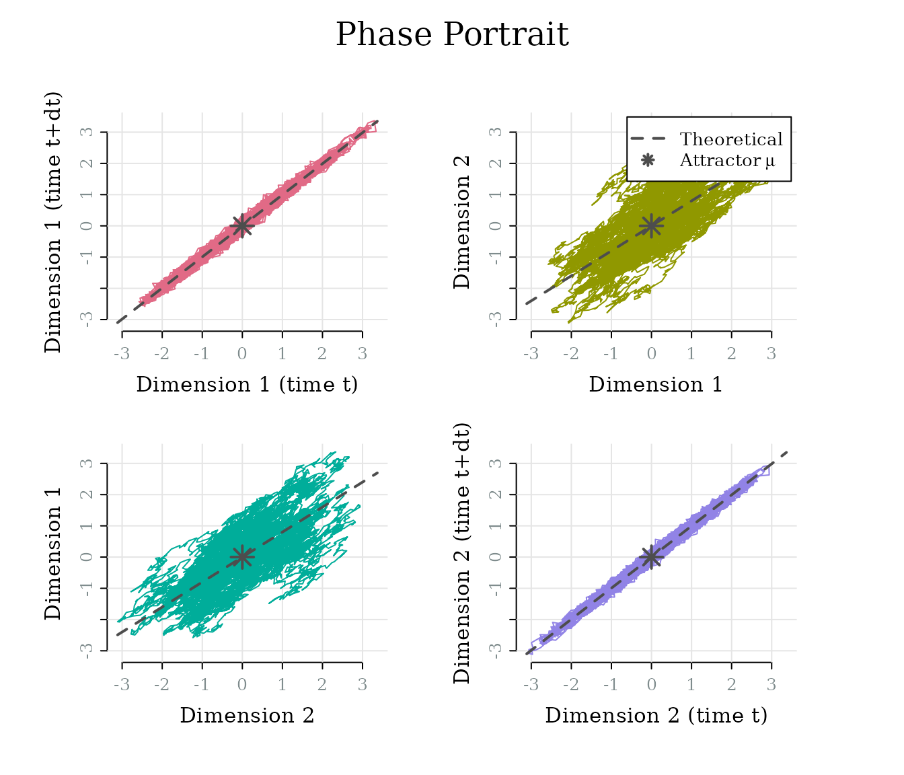
Summary
| Feature | Parameter | Effect |
|---|---|---|
| Mean reversion | Rate of return to baseline | |
| Perturbation persistence | Half-life of perturbations | |
| Reactivity | Magnitude of fluctuations | |
| Stability | sign() / eigenvalues of | Stationary vs divergent |
| Cross-coupling | off-diagonal | Interdimensional dynamics |
| Noise coupling | off-diagonal | Interdimensional dynamics |